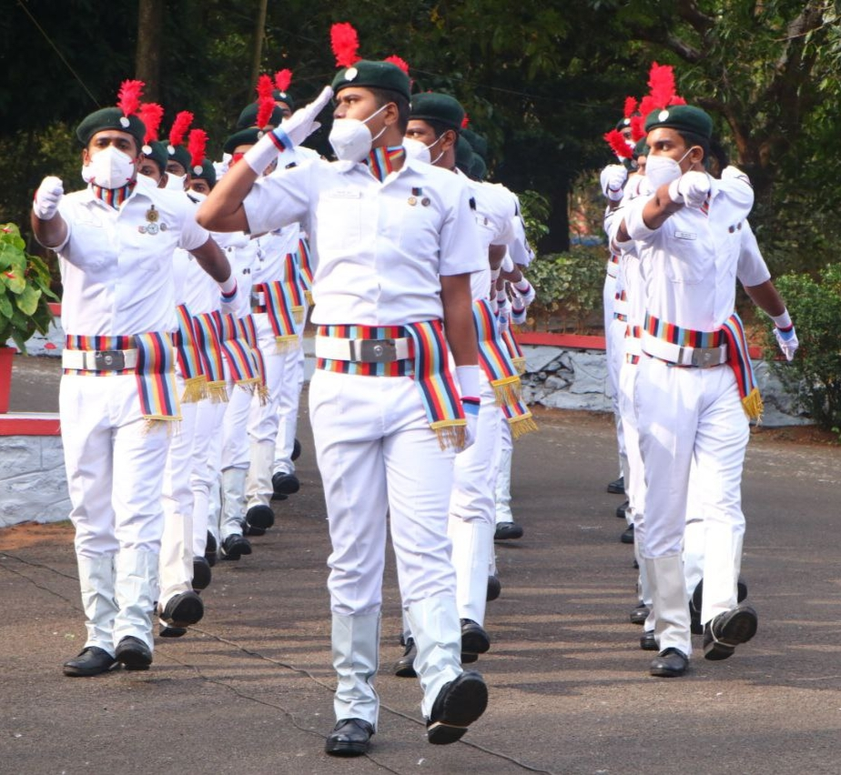
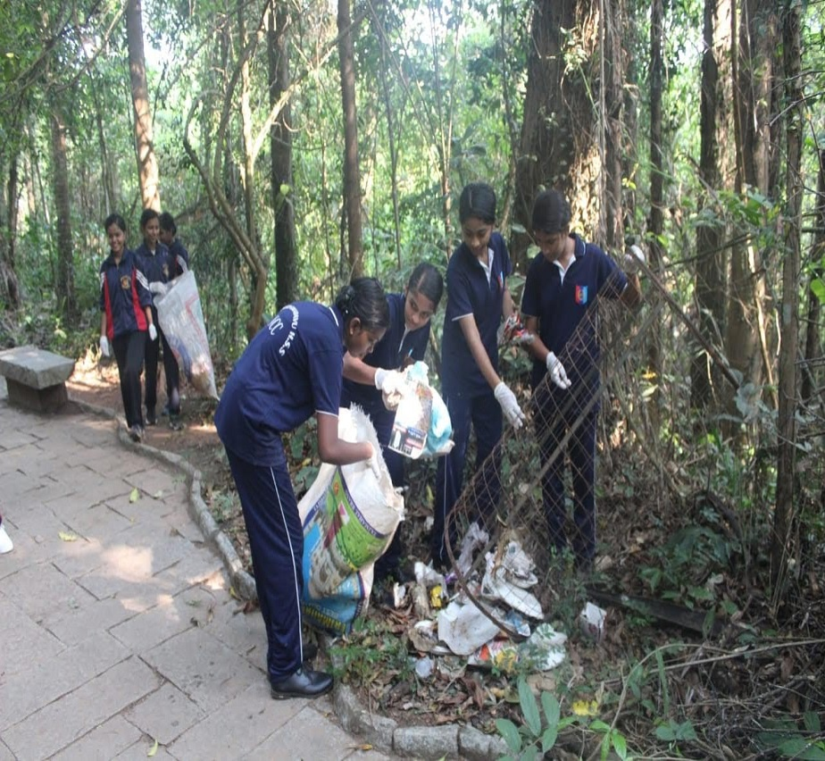
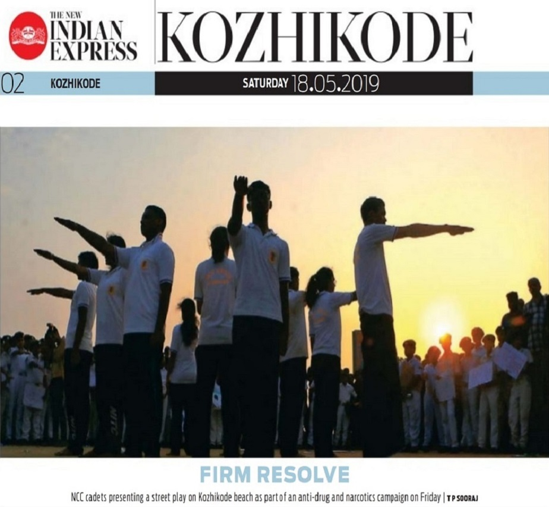

The ‘Aims’ of the NCC laid out in 1988 have stood the test of time and continue to meet the requirements expected of it in the current socio–economic scenario of the country. The NCC aims at developing character, comradeship, discipline, a secular outlook, the spirit of adventure and ideals of selfless service amongst young citizens. Further, it aims at creating a pool of organized, trained and motivated youth with leadership qualities in all walks of life, who will serve the Nation regardless of which career they choose. Needless to say, the NCC also provides an environment conducive to motivating young Indians to join the armed forces.

To Create a Human Resource of Organized, Trained and Motivated Youth, To Provide Leadership in all Walks of life and be Always Available for the Service of the Nation.

To Provide a Suitable Environment to Motivate the Youth to Take Up a Career in the Armed Forces.

To Develop Character, Comradeship, Discipline, Leadership, Secular Outlook, Spirit of Adventure, and Ideals of Selfless Service amongst the Youth of the Country.
MOTTO OF NCC
The need for having motto for the Corps was discussed in the 11th Central Advisory Committee (CAC) meeting held on 11 Aug 1978. The mottos suggested were “Duty and Discipline”; “Duty, Unity and Discipline”; “Duty and Unity”; “Unity and Discipline”. The final decision for selection of “Unity and Discipline” as motto for the NCC was taken in the 12th CAC meeting held on 12 Oct 1980.
PLEDGE
WE THE CADETS OF THE NATIONAL CADET CORPS,
DO SOLOEMNLY PLEDGE THAT WE SHALL ALWAYS UPHOLD THE UNITY OF INDIA.
WE RESOLVE TO BE DISCIPLINED AND RESPONSIBLE CITIZEN OF OUR NATION.
WE SHALL UNDERTAKE POSITIVE COMMUNITY SERVICE IN THE SPIRIT OF SELFLESSNESS
AND CONCERN FOR OUR FELLOW BEINGS.
NCC FLAG
The NCC flag for various units of the NCC was first introduced in 1951. The flag was of same pattern, colour and size as was used by various regiments of the Army. The only difference was that it had the NCC badge and unit designation placed in the centre. Later on it was felt that the flag should be in keeping with the inter-service character of the Corps. In 1954 the existing tricolour flag was introduced. The three colours in the flag depict the three services of the Corps, red for the Army, deep blue for the Navy and light blue for the Air Force. The letters NCC and the NCC crest in gold in the middle of the flag encircled by a wreath of lotus, give the flag a colourful look and a distinct identity.
NCC SONG
Hum Sab Bharatiya Hain, Hum Sab Bharatiya Hain
Apni Manzil Ek Hai,
Ha, Ha, Ha, Ek Hai,
Ho, Ho, Ho, Ek Hai.
Hum Sab Bharatiya Hain.
Kashmir Ki Dharti Rani Hai,
Sartaj Himalaya Hai,
Saadiyon Se Humne Isko Apne Khoon Se Pala Hai
Desh Ki Raksha Ki Khatir Hum Shamshir Utha Lenge,
Hum Shamshir Utha Lenge.
Bikhre Bikhre Taare Hain Hum Lekin Jhilmil Ek Hai,
Ha, Ha, Ha, Ek Hai
Hum Sab Bharatiya Hai.
Mandir Gurudwaare Bhi Hain Yahan
Aur Masjid Bhi Hai Yahan
Girija Ka Hai Ghariyaal Kahin
Mullah ki Kahin Hai Ajaan
Ek Hee Apna Ram Hain, Ek hi Allah Taala Hai,
Ek Hee Allah Taala Hain, Raang Birange Deepak Hain Hum,
lekin Jagmag Ek Hai, Ha Ha Ha Ek Hai, Ho Ho Ho Ek Hai.
Hum Sab Bharatiya Hain, Hum Sab Bharatiya Hain.
History of NCC NITC
The Naval NCC in NITC started on 31 October 2018 with its 1st batch of 14 cadets enrolled under 9 (k) Naval NCC in Kerala & Lakshadweep directorate. The first NCC parade training of the cadets took place on 03 November 2018 on the Institute Ground, NITC. With the beginning of NCC in NITC, started the involvement in various events celebrated by the Institute such as Republic Day, Independence Day, Unity Day and many more. By the passing year, as the strength of NCC NITC cadets increased, so did their involvement in activities such as camps, parades, flood relief, shramdan, boat pulling etc. The cadets have always made sure to mark the presence of NITC, be it the best cadet award, 1st prize for street play on anti-drugs campaign on Kozhikode beach in the presence of Mayor, Group commander Calicut. With each passing year, they continue to move forth, creating the leaders for tomorrow.
03-02-2019
our first batch have attended the weapon training camp under the guidance of chandra shekar sir
03-12-2018
Result of ano selection board.Dr Chandra shekhar bestha sir has selected as ANO
24-10-2018
Allotment of regimental numbers to our first batch NCC cadets
03-05-2018
released a circular to recruite the students and ncc officer for the campus
23-07-2017
Our campus register Lt col pankajakshan sir has written a letter to unit stating that we are raising a naval ncc unit in our campus
30-08-2013
at the time of 30 aug 2013 as per the applied institutions for ncc sub unit our institution stands in 8th waiting list as per seniority
5-10-2006
letter from unit stating that your application has been acknowledged
27-07-2006
An application has sent for raising a new NCC sub unit in NIT CALICUT.The letter is sent under the director G R E Reddy sir